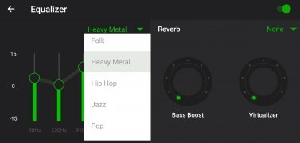
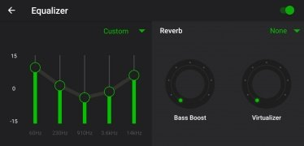

XPlayer 私密文件夹的真相：它为什么不加密文件？
深入拆解 XPlayer 私密文件夹、硬解架构与投屏协议背后的技术取舍，理解「够用」和「安全」之间那条微妙的线
一个反直觉的设计决策
我第一次注意到 XPlayer 私密文件夹的细节时，愣了一下。
文档写得很直白：视频文件本身不会被加密，只在扫描层隐藏。也就是说，你在 XPlayer 里长按一个视频选「移动到私密文件夹」，设置了 8 位密码，但这个文件仍然躺在 /storage/emulated/0/Movies/ 下面，原封不动。只要用手机自带的文件管理器或 MX Player 扫一遍，就能看到它。
这算哪门子「私密」？
但转念一想，每天还有上百万用户在用这个功能。如果它真的只是个"自欺欺人"的开关，早就被骂下架了。那 XPlayer 为什么做了这样一个看似"阉割版"的隐私功能？它背后的设计逻辑是什么？
带着这个问题我去 XPlayer官网 翻了一圈资料，发现这套取舍远不止私密文件夹一个功能——而是从 XPlayer 的几个关键特性里，看它在"够用"和"安全"、"轻量"和"可靠"之间是怎么取舍的。
私密文件夹的底层逻辑：扫描层屏蔽
先说私密文件夹到底做了什么。
Android 上所有视频播放器的"扫描"本质上都是一样的：遍历设备存储的各个目录（内部存储的 Movies、DCIM、Download，外加 SD 卡），识别 .mp4、.mkv、.mov 等扩展名，把结果汇总到首页列表。XPlayer 私密文件夹的做法，是在这个扫描环节把你标记过的那几个路径从索引里剔除——就像给相册的某些照片加了个"不在相册中显示"的标记，照片还在文件夹里，但相册 App 不把它们列出来。

这是一个典型的"App 内隐藏"，而不是"文件级加密"。两者的区别在于：
| 保护层级 | 原理 | 破解难度 | 性能开销 |
|---|---|---|---|
| 扫描层屏蔽 | App 不索引特定路径 | 极低（换个播放器就看到） | 几乎为零 |
| 文件级加密 | 视频文件被 AES 加密存储 | 高（需要解密密钥） | 大（播放前需要实时解密） |
| 应用锁 | 整个 App 需要密码才能打开 | 中（可以用 ADB 绕过） | 低 |
XPlayer 选择了最轻量的第一档。代价很明确——只要有人拿到你的手机解锁、打开任何其他播放器或文件管理器，就能看到这些视频。但好处也很明确：完全不影响播放性能。如果用文件级加密，每次打开私密文件夹里的视频都要先解密，4K HEVC 片源本身就吃硬件，再加一层解密开销，旗舰机都可能掉帧。
这是一个典型的"够用优先"决策。XPlayer 的用户画像里，绝大多数场景是"手机被朋友/家人临时拿起翻一下"——这种情况下，扫描层屏蔽足够了。真正需要防的是"被解锁后用专业工具取证"，那应该用专门的加密 App（比如 AndroVault 或 KeepSafe），而不是一个视频播放器。
文档里也诚实承认了这一点："私密文件夹的安全级别是 App 内隐藏，不是文件级加密。对于极端敏感的内容，需要额外用专门的加密工具做文件级加密。"
硬解 vs 软解：架构取舍的另一个例子
私密文件夹的逻辑在 XPlayer 其他地方也能看到类似的取舍。比如 4K 播放的硬解策略。
4K HEVC 视频的码率通常在 20–80 Mbps，软解意味着完全靠 CPU 实时解码——骁龙 660 这种中端芯片跑 4K 软解大概率会卡成幻灯片，还会严重发热。硬解则是把解码任务交给 GPU 的专用硬件单元（ISP 或视频编解码器），同样的片源，硬解流畅度接近原生、耗电只有软解的 1/3 到 1/2。

XPlayer 的做法是默认开启硬件加速，而且不做软解的自动回退——如果设备不支持 H.265 硬解，4K 片源会直接提示"硬件不支持"，而不是偷偷切换软解然后让用户在卡顿中困惑。这跟私密文件夹的逻辑是一致的：不假装解决问题，而是把问题暴露出来让用户决定。
翻 XPlayer文档 时看到有一张推荐配置表很说明问题：骁龙 660 / 天玑 720 是 4K 硬解的最低门槛，骁龙 8 Gen / 天玑 9000 是推荐配置。低于这个门槛的设备，XPlayer 不做任何尝试，直接告诉你"看 1080P 吧"。这种"知难而退"的设计在播放器里不算常见——很多竞品会硬扛软解，美其名曰"全能解码"，实际上用户体验差到爆。
Chromecast 投屏：为什么选视频流而不是镜像
第三个例子是投屏。先去 XPlayer下载 装上应用，你就能在首页找到投屏入口。XPlayer 支持 Chromecast，而且文档里专门区分了"投屏"和"屏幕镜像"的不同。
Chromecast 投屏和 Miracast 镜像在技术路径上完全是两回事：
- 屏幕镜像是把手机屏幕的每帧画面实时编码、压缩、通过 WiFi 推到电视上——延迟高（通常 300ms 以上）、画质受限于手机分辨率、投屏时手机不能关屏（关屏就没画面了）。
- 视频流传输是手机把视频文件的 URL 告诉 Chromecast 设备，让 Chromecast 自己去拉流解码——延迟低（<1 秒）、画质由电视原生分辨率决定、手机屏幕可以关闭省电。

XPlayer 原生支持 Chromecast 的视频流传输协议，而不是简单做一层屏幕镜像。这背后的工程投入差异很大——视频流传输需要处理 Chromecast 的设备发现协议（SSDP/mDNS）、媒体控制协议（DIAL）、还要兼容不同电视厂商的 Chromecast 实现。但好处是用户体验天差地别：4K 片源投屏到 4K 电视，XPlayer 会自动以电视原生分辨率输出，而如果用 Miracast 镜像，上限就是手机的屏幕分辨率（大部分手机是 1080P 或 1440P）。
文档里提到的"WiFi 是硬性要求"也是 Chromecast 协议的设计使然——Chromecast 依赖局域网发现，手机和电视必须在同一个网段。这不是 XPlayer 的问题，而是协议本身的约束。XPlayer 在这方面做的是如实告知：搜不到设备时第一条排查建议就是"确认手机和电视在同一个 WiFi"，而不是让用户反复重启 App 试运气。
从三个特性看一套设计哲学
把这三个功能放在一起看，XPlayer 的设计逻辑就清晰了：
不做过度承诺。 私密文件夹不加密，就坦白说"只在 App 内隐藏"；4K 硬解做不到，就直接说"硬件不支持"；投屏依赖同网段，就把"WiFi 是硬性要求"写在排查清单的第一条。这种设计在营销上不讨喜——竞品可以喊"全格式支持、全场景保护"，XPlayer 却说"我只能做到这一步"。但对用户来说，清晰的边界比虚假的全能更有价值。
够用就好，不为极端场景牺牲主体验。 私密文件夹选择扫描层屏蔽，是因为绝大多数用户只需要防"临时被翻"，而不是防专业取证；硬解优先不做软解回退，是因为用户用 4K 播放器就是为了流畅，卡顿的 4K 不如不看；Chromecast 原生支持而不是做镜像层，是因为投屏的核心需求是"大屏看片"，镜像只是退而求其次的方案。
把复杂度藏在实现里，把选择权留给用户。 XPlayer 处理硬解失败的方式是提示而不是静默回退，处理投屏搜不到的方式是列出排查清单而不是自动重试，处理密码忘记的方式是给出三条出路（邮箱/安全问题/绕路）而不是强制重置。这三条功能的文档写法如出一辙：先讲原理、再讲操作、最后讲边界和常见问题——完全是"授人以渔"的思路。
这套设计适合谁、不适合谁
最后做个判断。
XPlayer 这套"够用优先、边界清晰"的设计，适合把视频播放器当工具用的人——看电影、追剧集、投屏到电视、偶尔需要藏几个不想被看到的视频。这些人的诉求是"稳定、流畅、别给我找麻烦"，而不是"最安全、最全能、最炫酷"。
不适合的场景也很明确：如果你需要真正的文件级加密保护极端敏感的视频，XPlayer 的私密文件夹不够用（文档也说了）；如果你的设备不支持 H.265 硬解又执着于看 4K，XPlayer 会直接拒绝而不是想办法帮你软解；如果你经常需要跨网段投屏（比如手机在公司、电视在家），Chromecast 的局域网限制会让你很头疼。
但这些"不适合"恰恰是 XPlayer 设计哲学的体现——它不试图成为所有人的万能工具，而是把"安卓上最好用的本地视频播放器"这件事做好，其他场景你自己找专门的工具。我觉得这才是一个成熟产品应该有的样子。顺带说一句，整理过的资料在 GitHub、Gitee 和 GitCode 三处都能拿到，国内访问卡的时候换个地址就行。